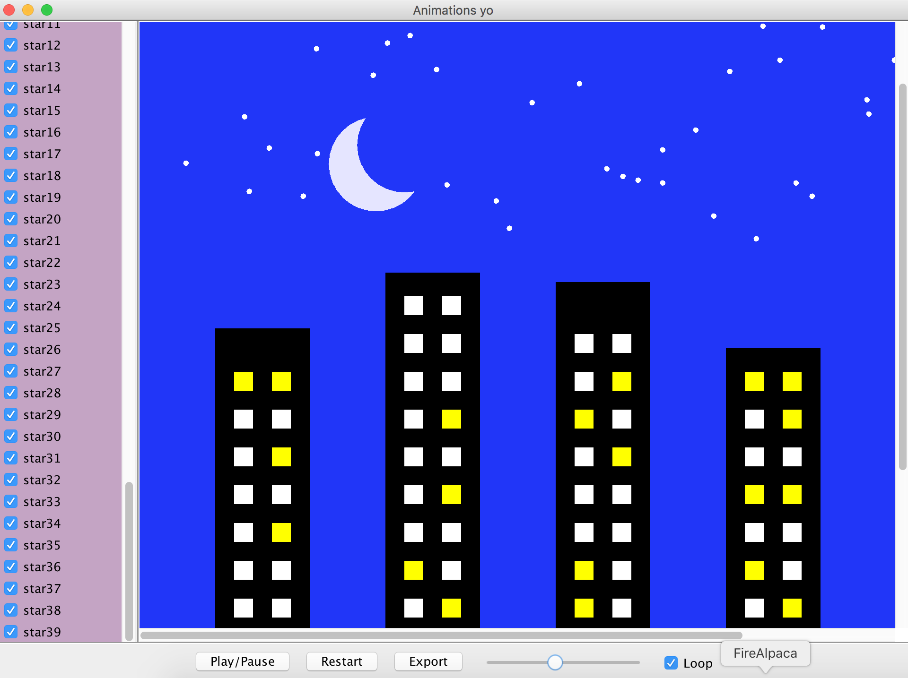

This was a half-semester long project developed in Object-Oriented Design in collaboration with Anika Jagow. The application has the ability to read in text files and render an animation described by the file in several different ways.
A Model, View, Controller (MVC) design pattern was used for this project. Throughout the semester, we built on our code base and implemented new features to our animator.
Below is a screen of our final buildings animation rendering. The interactive view supported features of shape selection, play/pause, scrubbing, looping, and exporting to an SVG file or text description.
The Model represents the data in this application. I used interfaces and classes to represent shapes and animations. I had a Rectangle and Oval class that both implemented a Shape interface. A similar approach was used for the ChangeColor, Scale, and Move classes that implemented an Animation interface.
Several views were built to work with our Model, which is one of the advantages of the MVC design pattern. We had a text view that output the animation as a textual description in plain English. Another view was the SVG view, which exported the animation as an SVG file that could be displayed in web browsers. The third view I implemented was the visual view that displayed the animation using Java Swing. Our final view, as shown in the screen shot, was a combination of all three views with additional interactive features.
The Controllers mediated the communication between the Views and the Model. They handled user inputs from the View, and sent that information back to the Model. This made sure that the View could not directly modify the Model, which could pose a security issue in other applications.
Please contact me if you are interested in viewing the source code. It is not available on Github due to course policy.